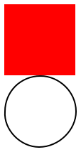

6.4
3.4 Kuvien muokkaus
procedure
(rotate asteluku k) → kuva
asteluku : reaaliluku k : kuva
Examples:
procedure
(scale kerroin k) → kuva
kerroin : positiivinen-reaaliluku k : kuva
Skaalaa annetun kuvan k suuremmaksi tai pienemmäksi riippuen siitä mikä kerroin on.
Jos kerroin on suurempi kuin 1, kuvan koko suurenee.
Examples:
procedure
(flip-horizontal k) → kuva
k : kuva
Tekee kuvasta k peilikuvan (vasemmalta oikealle).
Tekstiä sisältäviä (text) kuvia ei tueta, tämä ilmenee virheilmoituksena.
Examples:
> (beside (square 50 "solid" "red") (circle 25 "outline" "black"))
> (flip-horizontal (beside (square 50 "solid" "red") (circle 25 "outline" "black")))


procedure
(flip-vertical k) → kuva
k : kuva
Tekee kuvasta k peilikuvan (ylhäältä alas).
Tekstiä sisältäviä (text) kuvia ei tueta, tämä ilmenee virheilmoituksena.
Examples:
> (above (square 50 "solid" "red") (circle 25 "outline" "black")) 
> (flip-vertical (above (square 50 "solid" "red") (circle 25 "outline" "black")))

procedure
(crop x y leveys korkeus k) → kuva
x : reaaliluku y : reaaliluku leveys : positiivinen-reaaliluku korkeus : positiivinen-reaaliluku k : kuva
Rajaa kuvasta k suorakulmion sisään jäävän alueen. Alueen yläkulma sijaitsee pisteessä (x,y)
ja sen leveys ja korkeus annetaan.
Examples:
procedure
(frame k) → kuva
k : kuva
Palautaa kuvan, joka on täysin samanlainen kuin kuva k, mutta siihen sille on lisätty
yhden pikselin levyinen musta reuna.
Example:
Tämän funktion avulla voidaan debugata yhdistettyjä kuvia, eli nähdä missä kohtaa yksittäinen kuva loppuu.
Example: